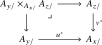
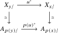
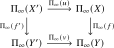
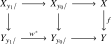
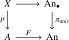

Definition 16.2.1. A category \(A\) is confluent if, for any morphism \(u\colon x\to y\) in \(A\), the functor \(u^*\colon A_{y/}\to A_{x/}\) defined by composition with \(u\) is a terminal functor.
Remark 16.2.2. The property for \(A\) to be confluent is equivalent to the following one:
given any morphisms in \(A\) of the form
\(u\colon x\to y\) and \(v\colon x\to z\), the category \(A_{y/}\times_{A_{x/}}A_{z/}\) is
weakly contractible.

Example 16.2.3. If \(A\) is a small category with pushouts, then it is confluent. Indeed, since the functor \(\Hom_A(-,a)\colon A\catop\to\An\) preserves pullbacks, for any morphisms in \(A\) of the form \(u\colon x\to y\) and \(v\colon x\to z\), if \(p=y\sqcup_xz\) denotes the corresponding pushout, then \[ A_{p/}\iso A_{y/}\times_{A_{x/}}A_{z/} \] has an initial object and is thus weakly contractible.
Proposition 16.2.4. Let \(p\colon X\to A\) be a left fibration. If \(A\) is confluent, then so is \(X\).
Proof
If \(p\) is a left fibration, then, for any object \(x\) of \(X\), the induced functor
\[
X_{x/}\to A_{p(x)/}
\]
is an equivalence (this is a morphism of left fibrations over \(A\) and it preserves the initial objects).
Therefore,
for any morphism \(u\colon x\to y\) in \(X\), we obtain a commutative square of the form

Theorem 16.2.5 (Rezk, Sattler–Wärn). A small category \(A\) is confluent if and only if the colimit functor \[ \colim_A\colon\Fun(A,\An)\to\An \] commutes with pullbacks.
Proof
Assume that \(A\) is confluent. Under the unstraightening equivalence
\[
\Un\colon\Fun(A,\An)\iso\LFib(A)\, ,
\]
the colimit functor \(\colim_A\) corresponds to the functor
\[
\LFib(A)\to\An
\]
defined by assigning to each left fibration \(p\colon X\to A\)
the anima \(\Pi_{\infty}(X)\).
In other words, it suffices to prove that, for any pullback square of
small categories of the form
   in which all functors are left fibrations, and such that there is a left
fibration \(p\colon Y\to A\), the induced commutative square
in which all functors are left fibrations, and such that there is a left
fibration \(p\colon Y\to A\), the induced commutative square
Conversely, let us assume that the functor
\(\colim_A\) preserves pullbacks in \(\An\).
Observe that, for any pullback square of the form
Definition 16.2.6. A functor is left exact if it preserves terminal objects as well as pullback squares.
A functor is right exact if it preserves initial objects as well as pushout squares.
A functor is exact if it is both left exact and right exact.
Definition 16.2.7. A category is filtered if it is weakly contractible and confluent. A category \(A\) is cofiltered if \(A\catop\) is filtered.
Example 16.2.8. If \(A\) is confluent, then, for any object \(x\) of \(A\), the co-slice \(A_{x/}\) is filtered: the projection \(A_{x/}\to A\) being a left fibration, we know that \(A_{x/}\) is confluent as well, by Proposition 16.2.4, and any category with an initial object is weakly contractible.
Theorem 16.2.9. A small category \(A\) is filtered if and only if the colimit functor \[ \colim_A\colon\Fun(A,\An)\to\An \] is left exact.
Proof
The functor \(\colim_A\colon\Fun(A,\An)\to\An\) sends the terminal object of \(\Fun(A,\An)\) to \(\Pi_{\infty}(A)\). Therefore the property that the \(A\)-indexed colimit functor preserves the terminal object is equivalent to the property that \(A\) is weakly contractible. Theorem 16.2.5 thus ends the proof.
Definition 16.2.10. A category \(A\) is sifted if it is weakly contractible and, for any objects \(x,y : A^\simeq\), the category \(A_{x/}\times_A A_{y/}\) is weakly contractible.
Proposition 16.2.11. Let \(A\) be a weakly contractible small category. The following conditions are equivalent.
(i) The category \(A\) is sifted.
(ii) For any object \(x : A^\simeq\), the projection \[ A_{x/}\to A \] is a terminal functor.
(iii) The diagonal functor \(\Delta\colon A\to A\times A\) is a terminal functor.
(iv) For any functors \(X,Y\colon A\to\An\), the canonical map \[ \underset{a : A}{\colim \ } X_a\times Y_a\iso \underset{a : A}{\colim \ } X_a\times \underset{a : A}{\colim \ } Y_a \] is an equivalence.
(v) For any objects \(x,y,z : A^\simeq\), the category \(A_{x/}\times_A A_{y/}\times_A A_{z/}\) is weakly contractible.
(vi) For any objects \(x,y : A^\simeq\), the projection \[ A_{x/}\times_A A_{y/}\to A \] is a terminal functor.
Proof
Quillen’s Theorem A (more precisely, the dual version of Corollary 9.5.8) implies that conditions (i) and (ii) are equivalent. Similarly, it shows that conditions (v) and (vi) are equivalent.
Given any object \((x,y)\) in \(A\times A\) we have \[ A\times_{A\times A} (A\times A)_{(x,y)/}=A_{x/}\times_A A_{y/} \, . \] Quillen’s Theorem A thus proves that conditions (i) and (iii) are equivalent.
Since \(A\) is weakly contractible, it is clear that condition (i) follows from condition (vi).
By Theorem 13.1.4 for \(C=\An\catop\), we see that condition (iii) implies that, for any functors \(X,Y\colon A\to\An\), we have: \[ \underset{a : A}{\colim \ } X_a\times Y_a\iso \underset{(a,b) : A\times A}{\colim \ } X_a\times Y_b\, . \] There is furthermore a canonical equivalence \[ \underset{(a,b) : A\times A}{\colim \ } F(a,b)\iso \underset{a : A}{\colim \ }\underset{b : A}{\colim \ }F(a,b) \] for any functor \(F\colon A\times A\to\An\). Since the functor \(T\times(-)\) commutes with small colimits in \(\An\) for any small anima \(T\), we also have \[ \underset{a : A}{\colim \ }\underset{b : A}{\colim \ } X_a\times Y_b\iso \underset{a : A}{\colim \ } X_a\times \underset{b : A}{\colim \ }Y_b\, . \] Putting all this together shows that condition (iv) follows from condition (iii).
It suffices now to prove that condition (iv) implies condition (v).
Condition (iv) means that the functor \[ \colim_A\colon\Fun(A,\An)\to\An \] commutes with binary cartesian products. This implies that it commutes with ternary cartesian products. For \(x,y,z : A^\simeq\), we have \[ \underset{a : A}{\colim \ }\Hom_A(x,a)\times\Hom_A(y,a)\times\Hom_A(z,a) =\Pi_\infty(A_{x/}\times_A A_{y/}\times_A A_{z/})\, . \] We also have \[ \underset{a : A}{\colim \ }\Hom_A(t,a)=\Pi_\infty(A_{t/})=* \] for any \(t : A^\simeq\). Therefore, \[ \underset{a : A}{\colim \ }\Hom_A(x,a)\times \underset{a : A}{\colim \ }\Hom_A(y,a)\times \underset{a : A}{\colim \ }\Hom_A(z,a)=* \] and thus condition (iv) implies that \(A_{x/}\times_A A_{y/}\times_A A_{z/}\) is weakly contractible.
Example 16.2.12. The category \(\simp\catop\) is sifted, by Corollary 10.4.7.
Corollary 16.2.13. A category is filtered if and only if it is sifted and confluent.
Proof
Any left exact functor preserves terminal objects as well as binary cartesian products. Theorem 16.2.5 and Proposition 16.2.11 thus imply that any filtered category is sifted. The converse implication holds for free, since any sifted category is weakly contractible, by definition.
Proposition 16.2.14. Let \(A\) be a category. Then \(A\) is sifted if and only if the following two conditions hold.
(i) The map \(A^\simeq\to [0]\) is a cover.
(ii) For any object \(x : A^\simeq\), the projection \(A_{x/}\to A\) is terminal.
Proof
We observe that the canonical functor \(A^\simeq\to\Pi_{\infty}(A)\) is always a cover by Corollary 11.2.16. Since any equivalence is a cover, Proposition 16.2.11 shows that these are necessary conditions. Conversely, let us assume that conditions (i) and (ii) above hold. In order to prove that \(A\) is sifted, it suffices to prove that \(A\) is weakly contractible. For any anima \(\Gamma\), the localization of \(A\) by all its maps in context \(\Gamma\) simply is \(\Pi_\infty(A)\times\Gamma\) (with structural map to \(\Gamma\) the second projection). But since \(A^\simeq\to [0]\) is a cover, the functor \((-)\times A^\simeq\) is conservative. Since weak contractibility is a proposition, it therefore suffices to prove it after base change along the cover \(A^\simeq\to[0]\). In that context, there is a canonical object \(x : A^\simeq\). The co-slice \(A_{x/}\) being weakly contractible, since it has an initial object, and terminal functors being weak equivalences, we observe that \(A\) must be weakly contractible.
Proposition 16.2.15. A poset \(P\) is filtered if and only if it is sifted.
Proof
Corollary 16.2.13 shows that this is a necessary condition. For the converse, assuming \(P\) to be sifted, in order to prove that it is filtered, it suffices to check that it is confluent. Let us consider \(x,y,z : P^\simeq\) such that \(x\leq y\) and \(x\leq z\). Since the projection \(P_{x/}\to P\) is an embedding by Lemma 10.3.7, the canonical map \[ P_{y/}\times_{P_{x/}}P_{z/}\to P_{y/}\times_{P}P_{z/} \] is an equivalence. This proves that \(P\) is confluent whenever it is sifted, by Remark 16.2.2.
Proposition 16.2.16. The poset \(\omega\) is filtered.
Proof
This follows from Corollary 16.1.6, Proposition 16.1.19 and Proposition 16.2.15.
Corollary 16.2.17. The formation of sequential colimits is compatible with terminal objects and pullbacks of animae. In other words, the functor \[ \colim_\omega\colon\Fun(\omega,\An)\to\An \] is left exact.
Proof
This follows from Theorem 16.2.9 and from the previous proposition.
Proposition 16.2.18. Let \(u\colon A\to B\) be a terminal functor with \(A\) filtered (sifted, respectively). Then \(B\) is filtered (sifted, respectively).
Proof
The functor \[ u^*\colon\Fun(B,\An)\to\Fun(A,\An) \] commutes with small limits and, for any functor \(F\colon B\to\An\) there is a functorial isomorphism \[ \colim_A u^*(F)\iso\colim_B F\, . \] Therefore, any exactness property of \(\colim_A\) induces a similar property for \(\colim_B\).
Proposition 16.2.19. Let \(p\colon A\to B\) be a functor between small categories. We assume that the following conditions hold:
(i) \(p\) is proper (e.g. a cocartesian fibration);
(ii) \(B\) is filtered (sifted, respectively);
(iii) for any \(b : B^\simeq\), the corresponding fiber \(A_b\) is filtered (sifted, respectively).
Then \(A\) is filtered (sifted, respectively).
Proof
By Lemma 9.6.5, properness of \(p\) gives \[ \colim_{a : A} F(a)\simeq \colim_{b : B}\ \colim_{x : A_b} F(x) \] for every \(F\colon A\to\An\). Restriction along \(A_b\to A\) preserves limits. The hypotheses on \(B\) and the fibers of \(p\) imply that \(\colim_A\) is left exact (preserves finite products, respectively). Apply Theorem 16.2.9 (Proposition 16.2.11, respectively).
Corollary 16.2.20. Let \(B\) be a small filtered (sifted) category and \(A\colon B\to \Cat\) a functor such that \(A_b\) is filtered (sifted, resp.) for any \(b : B^\simeq\). Then \(\colim_BA\) is filtered (sifted, resp.).
Proof
We know that \(\colim_BA\) is a localization of \(\int_BA\). Since any localization is a terminal functor, it suffices to check that \(\int_BA\) is filtered (sifted), by Proposition 16.2.18. This follows by applying Proposition 16.2.19 with \(p\) the projection of \(\int_BA\) to \(B\).